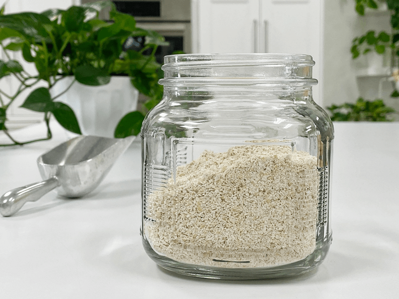
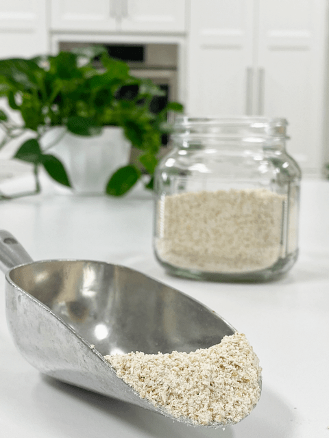
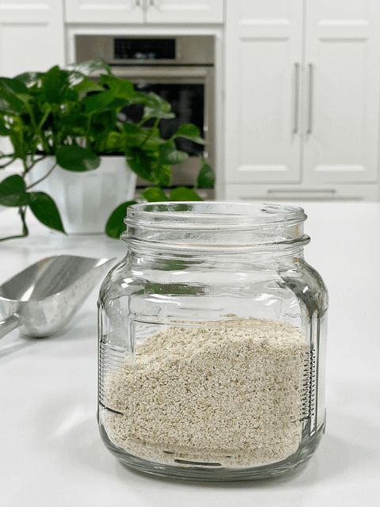

Oat Groat Flour – from the whole grain
Oat Groat Flour
Whole oat groats are the result of simply harvesting oats, cleaning them, and removing their inedible hulls. This form of oats is far more nutritious, and the texture and taste are superior to its counterparts that have been heavily processed. They offer up a robust and nutty-oat flavor. Oats do not contain gluten, but they are often grown alongside other gluten-containing grains; therefore, many people with celiac disease cannot eat them.

Avenin Awareness
However, those with celiac or gluten intolerance can still enjoy oats as long as they are certified gluten-free oats. Oats contain a protein called avenin, which can trigger an immune response similar to that of gluten in some people with celiac disease. Proceed with caution if this is an issue for you.

Oats are a rich source of soluble fiber, protein and vitamins, and a great way to help reduce bad cholesterol. And the best method to get their full nutrition is to mill (grind) some as needed. You can go ahead and do the soaking and dehydrating process, having it all ready to go for those times that a recipe calls for oat flour.
Further on down the post, I share with you three different kitchen tools that can be used to create oat flour. There are other units out there besides these, but these are the ones that I have in my kitchen.
Technique
The first one that I used was the Dry Grain Container that fits the Vitamix blender. The dry blades are shaped to push ingredients up to minimize packing into the bottom corners. Is this unit a “must-have”? Not really, you can use the standard blender container if you don’t own the dry grain container. If that be the case, why invest in the dry container? Grinding tough items like grains can possibly scratch the inside of the container near the blades, which can cause a“cloudy” marring of the plastic, and the scratches make it more likely to hold smells over time.
Next, I used the Magic Bullet. If you own one of these, you know that it comes with two different blade lids. For creating flours, you want to use the flat-bladed lid. You can only do about 1/2 cups worth of oats at a time. After activating the bullet, blend for about 30 seconds, then stop, shake the unit and blend again. Stopping and checking to see how fine the flour is getting.
Lastly, you can use a coffee grinder, which is the least expensive unit to purchase. The drawback is that you have to do small batches at a time. I recommend only filling the grinder about halfway to produce a more even grind. The length of time you grind will affect the coarseness of your flour. The longer you grind, the finer it will be.
Regardless of what device you use, if you want a really fine flour, sift it through a fine-mesh sifter and then regrind the larger bits that don’t pass through. Repeat this process until everything is finely ground. I hope that you found this helpful and that I have encouraged you to try your hand at making your own oat flour. Blessings, amie sue

Ingredients:
Yield 5 cups flour
Preparation:
- Follow the directions in the link above on soaking, sprouting, and dehydrating the groats before turning into flour.
- To grind into a fine flour, you can use the dry container that comes with the Vitamix, a spice grinder, a coffee grinder, or the Bullet.
- A food processor won’t get the flour fine but can be used if that is all that you have.
- I recommend doing this in small batches so the blade can move the dried pulp chunks around freely.
- Because of its fat content, oat flour can go rancid.
- Store the remaining oat flour in the refrigerator or freezer and bring it to room temperature before using it.
© AmieSue.com